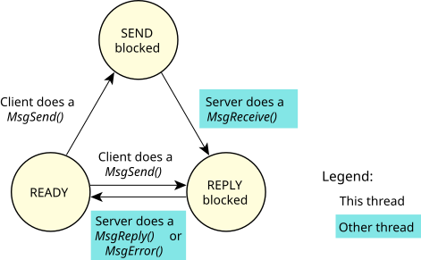
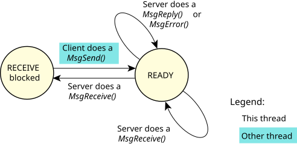

Synchronous messaging is the main form of IPC in the QNX OS.
A thread that does a MsgSend() to another thread (which could be within another process) will be blocked until the target thread does a MsgReceive(), processes the message, and executes a MsgReply(). If a thread executes a MsgReceive() without a previously sent message pending, it will block until another thread executes a MsgSend().
In QNX OS, a server thread typically loops, waiting to receive a message from a client thread. As described earlier, a thread—whether a server or a client—is in the READY state if it can use the CPU. It might not actually be getting any CPU time because of its and other threads' priority and scheduling policy, but the thread isn't blocked.


This inherent blocking synchronizes the execution of the sending thread, since the act of requesting that the data be sent also causes the sending thread to be blocked and the receiving thread to be scheduled for execution. This happens without requiring explicit work by the kernel to determine which thread to run next (as would be the case with most other forms of IPC). Execution and data move directly from one context to another.
Data-queuing capabilities are omitted from these messaging primitives because queueing could be implemented when needed within the receiving thread. The sending thread is often prepared to wait for a response; queueing is unnecessary overhead and complexity (i.e., it slows down the nonqueued case). As a result, the sending thread doesn't need to make a separate, explicit blocking call to wait for a response (as it would if some other IPC form had been used).
While the send and receive operations are blocking and synchronous, MsgReply() (or MsgError()) doesn't block. Since the client is already blocked waiting for the reply, no additional synchronization is required, so a blocking MsgReply() isn't needed. This allows a server to reply to a client and continue processing while the kernel and/or networking code asynchronously passes the reply data to the sending thread and marks it ready for execution. Since most servers will tend to do some processing to prepare to receive the next request (at which point they block again), this works out well.
The MsgReply() function is used to return a status and zero or more bytes to the client. MsgError(), on the other hand, is used to return only a status to the client. Both functions will unblock the client from its MsgSend().